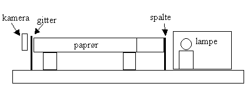
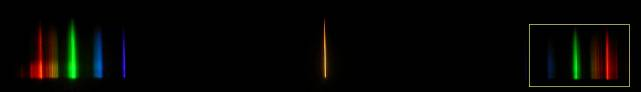
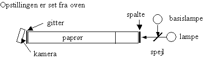

Paprøret er 1 meter langt, det er malet sort indvendigt med mat spraymaling. Det er skåret over ved tværstregen og en indvendig blænde er monteret. Ca. 20 cm paprør er skåret over på langs og lidt af omkredsen er fjernet, så det kan skydes ind i det lange rør.
Benyttes en kraftigt lysende lampe anbringes denne i en papkasse, så lampen kun kan lyse ud igennem en spalte og papkassen anbringes tæt ved spalten for enden af paprøret.
Spalten skal være så smal som muligt. Det er en fordel at være to om indstillingen, så kan den ene kikke gennem gitteret og den anden indstille spalte og placere lampen til optimal lysgennemgang.
Gitteret kan have 300 linier pr mm eller 600 linier pr mm. De 300 linier pr mm giver mindre vinkelspredning, men også mindre afvigelse fra linearitet. Til gengæld vil det være en fordel med større optisk zoom.

Spektrum af sparepære med 0te orden i midten og 1te orden til højre og venstre. Fotografer spektret i den gule ramme.
Kameraet anbringes på stativ skråt til venstre, således at billedet tages til højre og den blå del af spektret ses til venstre! Det er vigtigt, at kameraet er i vatter. Man kan benytte en stativstang fra Vernier + slutskive.
Kameraet skal indstilles til manuel betjening, fast afstand, ingen blitz.
Kameraet placeres, så den grønne del af spektret ses midt i billedet. Lyser lampen svagt, kan man forøge spaltebredden under indstillingen. Zoom ind, når spektret er fundet. Skyd en serie med tider fra 1 til 10 sekunder.
Spektre fra sparepærer er gode at øve sig på, idet Hg-linierne kan benyttes som basis. Man behøver derfor ingen referencelampe. (I Datalyse vælges manuel basis)

Basislampen kan være en sparepære, Hg-lampe, Cd-lampe eller en He-lampe. Spejlet er anbragt i en gitterholder, men er kun 1,5 cm i højden, således at lyses fra basislampen rammer spejlet og lyset fra lampen går over spejlet. Man kan afskærme lamperne i højden, så spektrene ikke overlapper. Kontroller med en lineal, at opstillingen er i vatter.
Mit kamera er et Minolta DiMAGE G500. Det er meget handy, lige til at sætte i livremmen og nemt at bruge også til spektre. Men det er ikke købt med spektre for øje. Til elevbrug vil det nok være nødvendigt med en adapter og den koster 600 kr.!
Skulle jeg købe et apparat til fysik, ville jeg nok se mindre på det smarte og mere på pris på adapter, stort display på bagsiden, god optisk zoom.